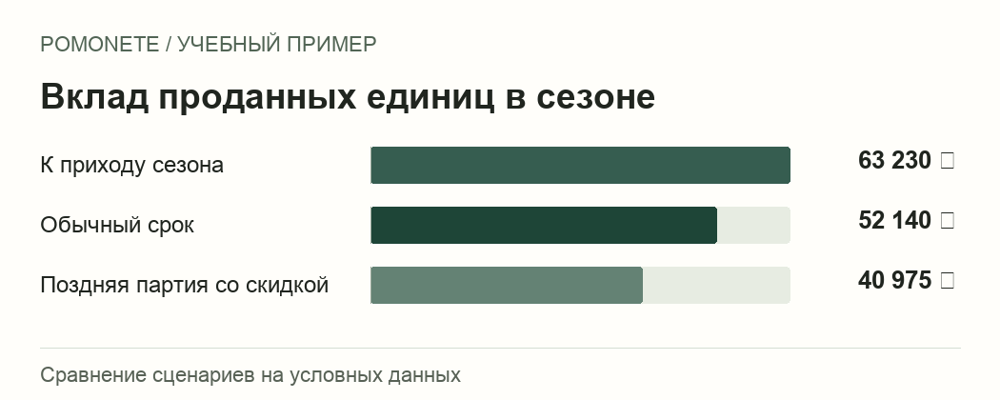

Поставка после пика спроса. Как сравнить две даты закупки
Аналитика селлера Яндекс Маркета для сравнения своевременной и поздней партии по вкладу периода.
Чехлы для подготовки сада продавались несколько недель. Селлер Яндекс Маркета может заплатить за ранний приход или дождаться стандартной доставки. Считаем деньги на Яндекс Маркете в окне сезонного спроса и смотрим, какие расходы изменяет выбранная дата.
Как сопоставлять даты
Выберите один конец периода. Для двух сроков оцените продажи на интервале реальной доступности и сравнимую цену. Поставьте остаток после периода в отдельную строку. Если он будет продан позже, оцените это за окном, не прибавляя в сезонный вклад.
Чтобы пересобрать расчёт «Вклад проданных единиц в сезоне» для своего магазина, перенесите в него исходные числа. В формуле A обозначает «доход на единицу, ₽», B обозначает «переменные затраты на единицу, ₽», C обозначает «доставлено до конца окна», D обозначает «расход ускорения, ₽». Удельную разницу умножают на количество. Последняя величина относится ко всему сценарию и учитывается один раз. Запишите рядом период и охват каждого среза. Если для одной строки известна только оценка, оставьте пояснение непосредственно рядом с ней: по итоговой цифре источник уже не восстановить.
Вклад проданных единиц в сезоне = (A − B) × C − D
| Условие | Доход на единицу, ₽ | Переменные затраты на единицу, ₽ | Доставлено до конца окна | Расход ускорения, ₽ | Вклад проданных единиц в сезоне |
|---|---|---|---|---|---|
| К приходу сезона | 1 260 | 865 | 194 | 13 400 | 63 230 ₽ |
| Обычный срок | 1 260 | 865 | 132 | 0 | 52 140 ₽ |
| Поздняя партия со скидкой | 1 140 | 865 | 149 | 0 | 40 975 ₽ |

В сценарии «К приходу сезона» в формулу подставляем доход на единицу, ₽ = 1 260, переменные затраты на единицу, ₽ = 865, доставлено до конца окна = 194, расход ускорения, ₽ = 13 400. Получается 63 230 ₽. Быстрая партия доступна к росту спроса, дорожает ускоренная доставка.
В сценарии «Обычный срок» в формулу подставляем доход на единицу, ₽ = 1 260, переменные затраты на единицу, ₽ = 865, доставлено до конца окна = 132, расход ускорения, ₽ = 0. Получается 52 140 ₽. Товар появляется позже. Меньше закрытых доставок к той же дате.
В сценарии «Поздняя партия со скидкой» в формулу подставляем доход на единицу, ₽ = 1 140, переменные затраты на единицу, ₽ = 865, доставлено до конца окна = 149, расход ускорения, ₽ = 0. Получается 40 975 ₽. Для позднего объёма заложили меньший доход и больше завершённых продаж.
Если «К приходу сезона» взять за исходную точку, «Обычный срок» меняет показатель «вклад проданных единиц в сезоне» на -11 090 ₽, а «Поздняя партия со скидкой» на -22 255 ₽. Между двумя последними строками разница составляет -11 165 ₽ при вычитании второй из третьей. Смотрите, какой именно вход изменился между строками. Если менялись объём и условия одновременно, итог сравнения относится ко всему сочетанию.
В пересчёте на исходное значение разница второй строки составляет -17,54%. Здесь в знаменателе модуль первого результата, 63 230 ₽. Для показателя в процентах рядом сохраните и абсолютную разницу в процентных пунктах. Для малого исходного значения процентный скачок может оказаться крупным даже при скромном практическом эффекте. В рабочем отчёте оставьте оба исходных значения, чтобы при расширении выборки можно было пересчитать изменение.
Почему скорость и скидка связаны
После пика покупатели сравнивают другие предложения, и скидка может увеличивать продаваемость. Она уменьшает вклад единицы. Полезно посчитать три цены и ожидаемое число сделок на каждую, не переносить скорость пика на поздние даты.
Соберите небольшую исходную выборку для «Обычный срок», прежде чем переносить правило на весь магазин. Нужны история продаж, журнал остатков и даты фактических приходов. Среди записей найдите одну обычную и одну с изменённым значением «доход на единицу, ₽». Убедитесь, что после пересчёта на сопоставимое окно обе строки дают те же результаты, которые видит исполнитель. Для ручных поправок оставьте короткое основание.
В историю поставок запишите обещанную и фактическую дату, момент доступности товара и интервал, в котором возник недозаказ. Разовые всплески спроса и дни без товара полезно отмечать отдельно. Когда данных мало, прогноз на ближайший горизонт лучше держать несколькими уровнями и привязывать каждый к своему действию. При высокой неопределённости небольшая партия с возможностью докупки даёт другую экономику, чем дешёвая крупная партия с долгим ожиданием.
Что сильнее всего меняет результат
Для «вклад проданных единиц в сезоне» начнём с результата 52 140 ₽. В «Обычный срок» условно меняем «доход на единицу, ₽», «переменные затраты на единицу, ₽», «доставлено до конца окна», «расход ускорения, ₽» по очереди. Шаг округляем до целой исходной единицы около 10%. Сравнение относится к одной строке расчёта. При сильной сезонной смене его полезно повторить и на второй базе с другим доступным объёмом.
- «Доход на единицу, ₽» меняется с 1 260 на 1 386. При прежних остальных входах получается 68 772 ₽, сдвиг составляет 16 632 ₽.
- «Переменные затраты на единицу, ₽» меняется с 865 на 951. При прежних остальных входах получается 40 788 ₽, сдвиг составляет -11 352 ₽.
- «Доставлено до конца окна» меняется с 132 на 145. При прежних остальных входах получается 57 275 ₽, сдвиг составляет 5 135 ₽.
- «Расход ускорения, ₽» меняется с 0 на 1. При прежних остальных входах получается 52 139 ₽, сдвиг составляет -1 ₽.
Самый заметный эффект дали данные по «доход на единицу, ₽»: 16 632 ₽. Подготовьте второй тест с двумя входами, которые обычно меняются вместе. Сравните его с одиночной подстановкой. Различие покажет, хватит ли следить за одной строкой при выбранном действии или в отчёте понадобится связанная пара наблюдений.
Подумайте о дробной партии: несколько ходовых разновидностей придут раньше, остальное обычным способом. Это позволяет сохранить часть спроса с меньшим расходом на ускорение. Сведите влияние на ассортимент и стоимость отдельных отправлений до решения.
Как договориться с поставщиком
Определите, сколько денег разумно вложить в ускорение при раннем и позднем спросе. Попросите календарь реального прихода, а не обещание готовности на фабрике. После сезона сравните итог, остаток и фактическую стоимость ставки на ранний приход.
На очередном пересмотре отметьте, какие сроки реализовались и какой был спрос в дни с доступным запасом. Оценку качества считают на событии, которое наступило после составления прогноза. Так проще отделить неточность метода от изменившейся доступности поставщика. Храните старые допущения: когда рынок меняется, восстановить причину размера закупки можно по сохранённым датам и объёмам.
Заведите карточку наблюдения с тремя числами: исходный ориентир, факт после вмешательства и размер выборки. Для «вклад проданных единиц в сезоне» оставьте единицу из таблицы и дату подстановки. В аналитике продавца Яндекс Маркета показатель должен отвечать на тот же вопрос при повторном сборе. Если на следующем цикле изменятся исходники, сохраняйте расхождение вплоть до строки, которую сможет пересчитать коллега.